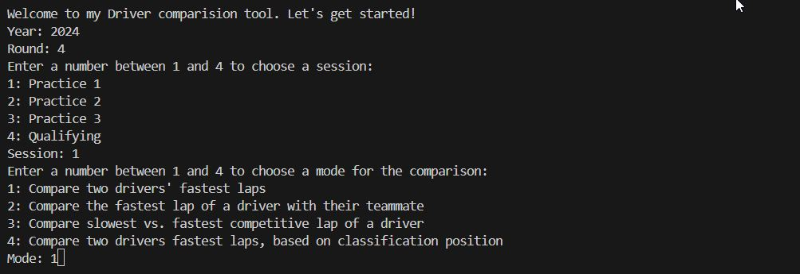
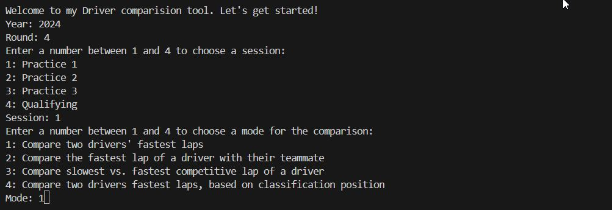

Formula 1 Laptime and Telemetry Comparison Tool
Completed: 26/08/2025
This project is a Python-based tool that allows users to compare two Formula 1 laptimes and visualize their telemetry data. It uses the FastF1 API to deploy the data and Matplotlib for plotting.
 

Technologies Used
- Python
- Pandas
- FastF1 API
- Matplotlib
Key Features
- Handling User input and check it for validation
- Fetching data from FastF1
- Organise the data and plot it as telemetry plots
Learnings
With this project, I consolidated my Python skills, especially with pandas. This project also allowed me to get more familiar with using FastF1 and APIs in general. I enjoyed getting a better idea of working with real world data. This project was a nice introduction to work with data and Python projects in general.